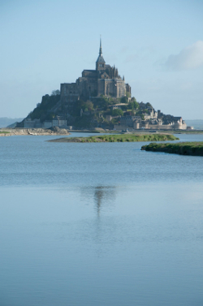

Итак, мы расширяем свою географию поездок во Францию, без преувеличения самую замечательную страну, куда только возможно поехать на велосипедах. По красоте ландшафтов, разнообразию исторических памятников, и приветливости людей и, конечно, по замечательной кухне и отличному вину. Маршрут проходит по Бретани и Нормандии, по побережью Атлантического океана и пролива Ламанш, через знаменитые города Ренн, Сeн-Мало и Кан, город-скалу Монт Сен-Мишель (на фото справа) и места высадки союзников во время второй Мировой Войны. Рельеф – в основном равнинный с небольшими холмами, доступными для начинающих. Регион славен самым хорошим сыром камамбер, обширными устричными фермами и прочими дарами моря, а также (разумеется, абсолютно теортетически) известной яблочной водкой Кальвадос.